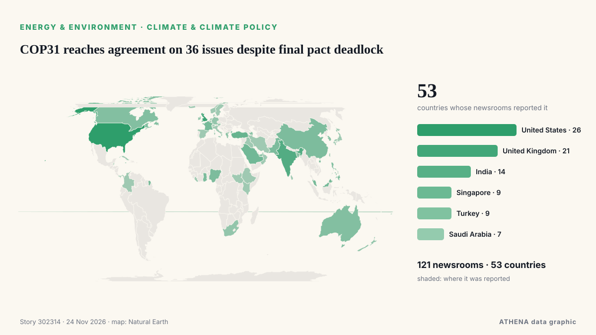

Ενέργεια, Πόροι & Περιβάλλον
ΧορηγούμενοΠαρουσιάζεται από  Cybernetics and Artificial Intelligence Lab Welcome to the Cybernetics and Artificial Intelligence Laboratory, established at the Department of Business Administration of the National and Kapodistrian University of Athens. The lab is headed by Professor Dimitrios Thomakos. The lab aims to do research that can be published in top venues. Our research uses tools and methods of Artificial Intelligence, and lies in the following areas: - Forecasting - Decision making - Cyber security - Finance We are always looking forward to collaborating with exceptional students!
Cybernetics and Artificial Intelligence Lab Welcome to the Cybernetics and Artificial Intelligence Laboratory, established at the Department of Business Administration of the National and Kapodistrian University of Athens. The lab is headed by Professor Dimitrios Thomakos. The lab aims to do research that can be published in top venues. Our research uses tools and methods of Artificial Intelligence, and lies in the following areas: - Forecasting - Decision making - Cyber security - Finance We are always looking forward to collaborating with exceptional students!
Οι τίτλοι των ειδήσεων παρουσιάζονται στα αγγλικά, όπως δημοσιεύτηκαν.

Κλίμα & κλιματική πολιτικήCOP31 reaches agreement on 36 issues despite final pact deadlock
Countries reached agreement on 36 agenda items at COP31, including climate finance, adaptation and a just transition, despite failing to adopt an overarching political deal, the conference presidency… από Hürriyet Daily News
| 11 Νοε | 117 |
|---|---|
| 12 Νοε | 90 |
| 13 Νοε | 74 |
| 14 Νοε | 42 |
| 15 Νοε | 51 |
| 16 Νοε | 109 |
| 17 Νοε | 87 |
| 18 Νοε | 84 |
| 19 Νοε | 78 |
| 20 Νοε | 50 |
| 21 Νοε | 42 |
| 22 Νοε | 37 |
| 23 Νοε | 51 |
| 24 Νοε | 1 |
Samsung and DNV team up on nuclear-powered LNG carrier
Samsung Heavy Industries, Tesser Atomics, NTNU and DNV to develop nuclear-powered LNG carrier concept for transatlantic trade. από Seatrade Maritime
Key outcomes agreed at the UN climate talks in Antalya
The COP31 climate talks in Antalya, Turkey, have failed to reach agreement on a “pact” that lacked clear references to… από Carbon Brief
COP31 ends in failure as countries split over fossil fuels, climate finance
COP31 ended without a consensus deal for the first time since 2009. από Ars Technica
Power Supply Situation in Odesa Region Remains Difficult
Following Russia's massive overnight attack on November 20, energy workers have managed to partially stabilise electricity supplies in the affected regions, but the situation remains difficult in the… από Ukrinform (English)
Democrats win largest US House majority since 1992: media
Democrats have won the largest majority in the US House of Representatives in more than three decades, after Chuck Hubbard defeated Republican representative Virginia Foxx in North Carolina, US media… από Vanguard
Presidential villa suffers water and power cuts, Nigerian leader says
Bola Tinubu says he was shaving last week when the water cut out - an experience familiar to many Nigerians. από BBC News
As headlines fade, Nepal’s flood survivors are still rebuilding
Months after deadly floods and landslides struck, a Malaysian relief team found families and schools still grappling with the quieter, everyday work of starting again. από Free Malaysia Today
Fight over fossil fuels leaves COP31 climate talks in deadlock
Countries from nearly 200 countries are in a deadlock to try and get a new global climate agreement. από BBC News
Mexico’s solar PV capacity to triple by 2035, forecasts GlobalData
Mexico’s power sector is entering a period of renewable-led capacity growth under a recentralized, state-led market model, with solar PV. από Cyprus Shipping News
Villarreal say Pepe's eye surgery not linked to watching solar eclipse
Former Arsenal forward Nicolas Pepe returned to action wearing a protective mask after being out for two weeks following an operation. από Free Malaysia Today
UN Climate Talks End Without Major Deal
COP31 negotiations collapse after deep divisions over fossil fuels and climate finance, leaving key climate commitments unresolved. από News of Bahrain
Britain digging new reservoirs to fight persistent droughts
Havant Thicket Reservoir will be the first to enter service in England since 1992. από The Straits Times
HMM signs green shipping deal with Nextpower
South Korean shipping company HMM said Monday it had signed a deal allowing US solar technology company Nextpower to reflect emissions reductions from HMM’s use of lower-carbon marine fuels in its… από Korea Herald
PM Wong to visit Australia from Nov. 23-25, meet Australian PM Albanese
PM Wong will fly to Australia on Singapore Airlines' inaugural flight to Western Sydney International Airport. από Mothership
LR approves new Rules for nuclear-powered ships and offshore units
The Class Rules are suitable for all ship- and offshore unit- types, are technology agnostic and set the goals and functional requirements for integrating nuclear power with maritime. από Ports Europe
China deals boost global investor confidence in Indonesia: Minister
Global investors' confidence in Indonesia's investment climate is growing, as reflected in US$86.8 billion ... από Antara (English)
'The town is gone': Brazil storm death toll rises to 5
Rain and high winds battered Tupancireta early Friday, tearing up buildings and about 100 trees in the municipality that is home to 20,000 people. από Channels TV
Libya’s Oil Output Plunges as Armed Groups Shut Key Pipelines
Libya’s oil production has crashed by about 350,000 barrels per day (bpd) after an outlaw group closed a valve on the pipeline transporting crude oil from Sharara, the country’s biggest oilfield, the… από OilPrice.com
Kuala Lumpur otters raise river revival hopes
Beneath a tangle of highway in the Malaysian capital, a family of otters rolls around in a patch of riverside sand, delighting the few passersby who notice them. από Mongabay
Drone attack reported on Kaleykino oil pumping station in Russia's Tatarstan
Residents of Almetyevsk in Russia's Tatarstan region recorded flashes near the village of Kaleykino, where an oil pumping station of the Russian trunk oil pipeline system of the same name is located. από Ukrinform (English)
Korea asks Qatar to prioritize LNG supplies once production, shipping normalize
Industry Minister Kim Jung-kwan on Monday requested that Qatar give priority to supplying liquefied natural gas (LNG) to Korea when Qatari LNG production and navigation through the Strait of Hormuz… από The Korea Times
Rain, Storms and Strong Winds Kick Off Week
Rain and thunderstorms are expected across western and northern regions and parts of the Aegean, while southerly winds could reach 8 on the Beaufort scale and temperatures climb to 24 C. από To Vima (English)
Chow Kon Yeow rebuts Lim Guan Eng’s RM210m claim, says Penang won’t pay for undelivered water
GEORGE TOWN, Nov 22 — Penang is not required to make any payments to Perak before water supply under the Bulk Water Supp... από Malay Mail
Lawmaker urges habitat protection over Javan Rhino relocation
Conservation efforts for the critically endangered Javan rhino in Banten’s Ujung Kulon National Park must ... από Antara (English)
EU officials reject Cop31 deal as it 'doesn't speak to reality of the climate crisis' – video
The Cop31 climate talks fell into disarray as the EU, UK and allies in the developing world rejected what they called an unacceptable deal on the future of the climate. από Guardian Environment
Around 50 settlements in Rivne Oblast left without power following Russian attack
A Russian strike on the Sarny district in Ukraine's west disrupted the electricity supply to dozens of settlements, while repeated air-raid warning are hampering repair work. από Ukrainska Pravda (English)
EU objects to Cop31 draft deal over failure to mention fossil fuels
Bangladeshi climate advocates welcome key proposals but warn that delivery will depend on public grants, clear timelines and firm obligations for developed countries. από The Business Standard (Bangladesh) (working feed)
At SCO forum in New Delhi, Musadik Malik terms climate change a 'threat' to civilisation
Minister for Climate Change and Environmental Coordination Dr Musadik Malik addresses Shanghai Cooperation Organisation Civilisational Dialogue Forum in New Delhi, India, November 21, 2026.… από Geo News (English)
Pacific climate demands face resistance at COP31
COP31 negotiations have entered a critical second week after Australia’s Minister for Climate Change and Energy, Chris Bowen, presented the first draft of a presidency-led cover decision, setting out… από Post-Courier (PNG)
Russia strikes gas service facility in Dnipropetrovsk region with guided bomb, several injured
Russian forces attacked a gas service facility in the Dnipropetrovsk region with an aerial bomb on Sunday, November 22. από Ukrinform (English)
COP31 climate talks on the brink as new draft deal faces scrutiny
New draft would acknowledge for the first time that global warming is on course to pass the 1.5C threshold. από Al Jazeera English
Fossil Fuels Missing In New COP31 Draft Deal, Tensions Remain Unresolved
Fossil fuels are a flashpoint at the climate talks and the summit comes against a difficult backdrop of soaring energy prices and geopolitical tensions stemming from the war in Iran. από NDTV World
Heavy rain on way for parts of UK
The alert will be in effect for parts of the South West from 6am and remain in place the entire day. από Evening Standard (London)
COP31 climate deal in the balance after fractious talks
Ten years after the Paris Agreement took effect, its durability faces another test. από Khmer Times